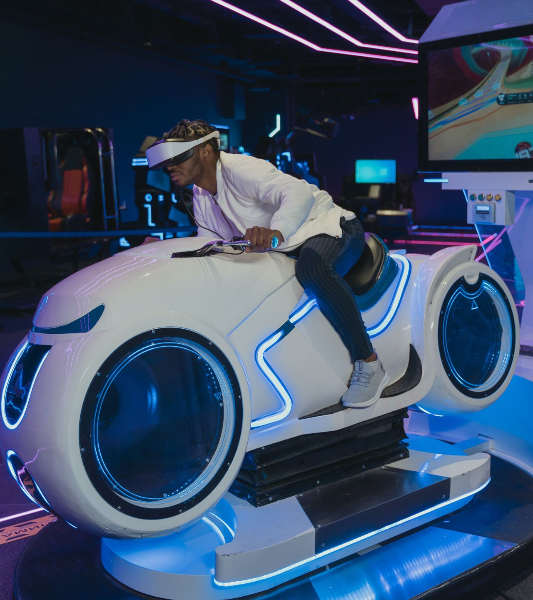
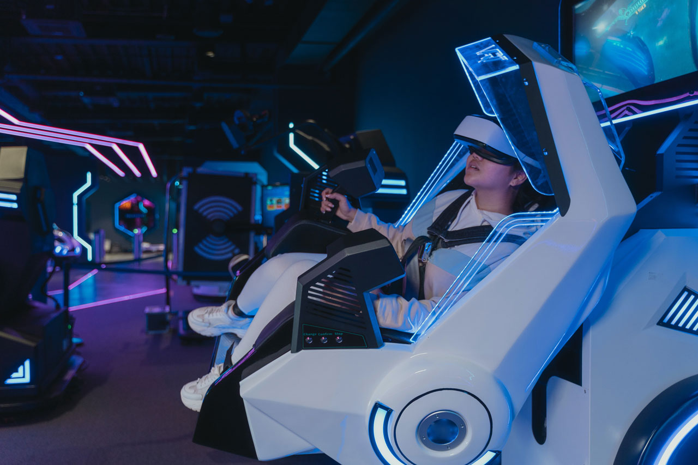
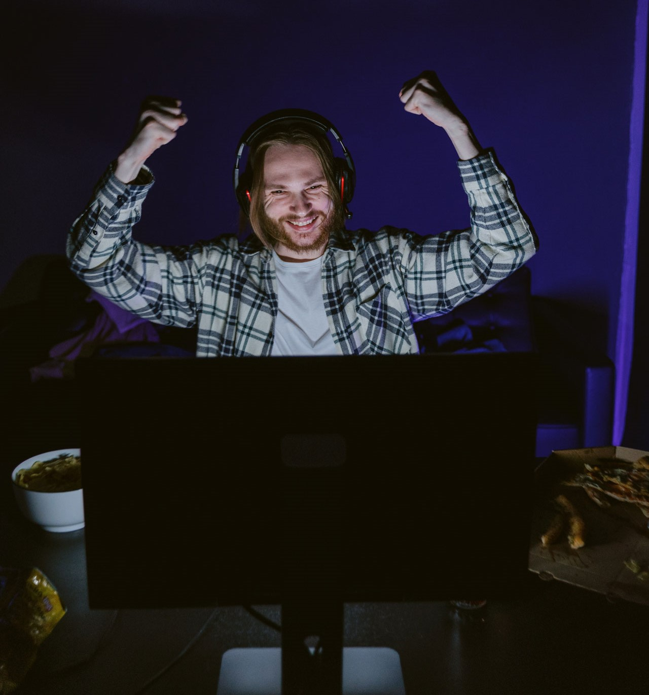
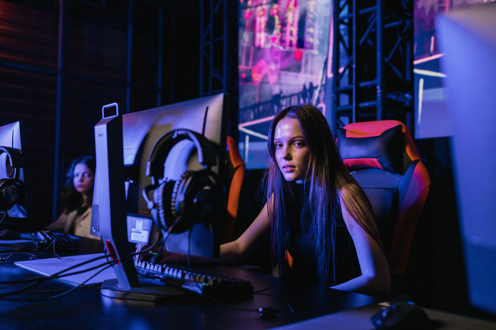

SOBRE OS PILOTOS
Leo
O líder e fundador da equipe, Leo é um piloto experiente e versátil, que domina qualquer tipo de jogo de corrida, desde os mais realistas até os mais arcade. Ele tem um estilo agressivo e ousado, que o faz ultrapassar os limites da velocidade e da física. Ele é o responsável por organizar os campeonatos online e treinar os novos membros da equipe.
Ana
Ana é uma pilota talentosa e inteligente, que sabe usar as melhores estratégias e táticas para vencer as corridas. Ela é especialista em jogos de corrida com elementos de RPG, como Forza Horizon 5, onde ela customiza os seus carros com as melhores peças e habilidades. Ela também é a encarregada de criar e editar os vídeos dos melhores momentos da equipe.
Rafa
O mais jovem da equipe, Rafa é um piloto prodígio e criativo, que impressiona pela sua habilidade e destreza nos jogos de corrida. Ele é especialista em jogos de corrida com elementos de ação, como Need for Speed: Heat, onde ele usa os seus reflexos rápidos e as suas manobras incríveis para escapar dos perseguidores e dos obstáculos. Ele também é o responsável por divulgar e promover a equipe nas redes sociais.
Gui
O mais velho da equipe, Gui é um piloto veterano e sábio, que tem um vasto conhecimento e experiência nos jogos de corrida. Ele é especialista em jogos de corrida com elementos de simulação, como Gran Turismo 7 e F1, onde ele usa as suas técnicas refinadas e o seu domínio do traçado para obter o melhor tempo possível. Ele também é o encarregado de pesquisar e analisar os jogos de corrida mais recentes e as tendências do mercado.
Lia
Pilota bem humorada e aventureira, que adora explorar e descobrir novos lugares nos jogos de corrida. Ela é especialista em jogos de corrida com elementos de aventura, como Horizon Chase Turbo, onde ela usa as suas habilidades de navegação e o seu espírito de aventura para completar as corridas mais desafiadoras, além de dominar o Crash Team Racing Nitro-Fueled, onde ela usa os seus itens malucos para animar as coirridas. Ela também é a responsável por criar e testar as pistas personalizadas da equipe.